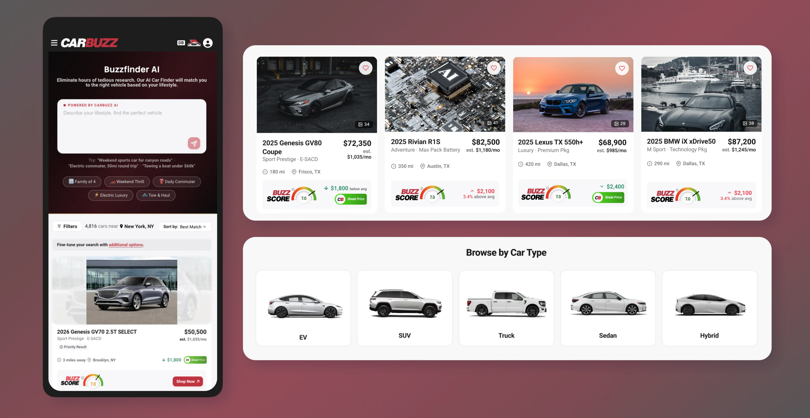
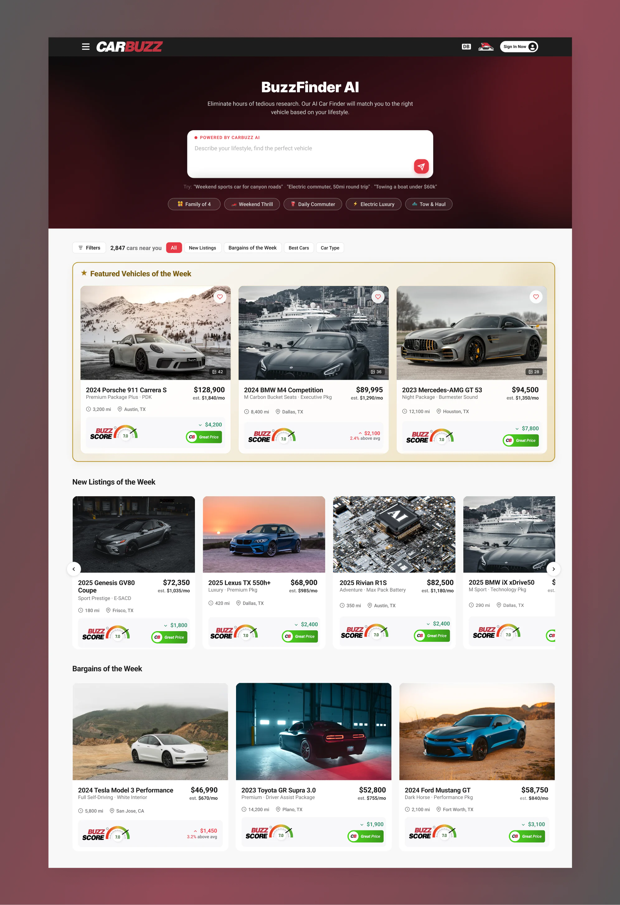
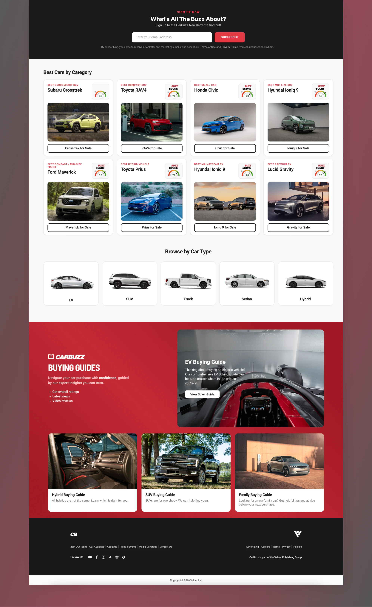
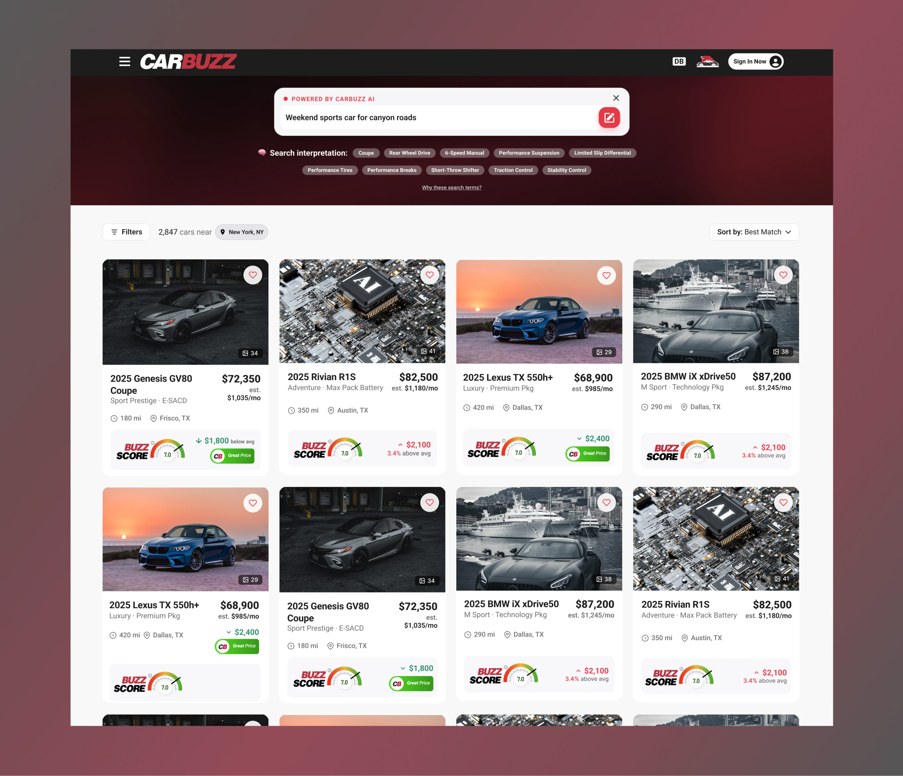
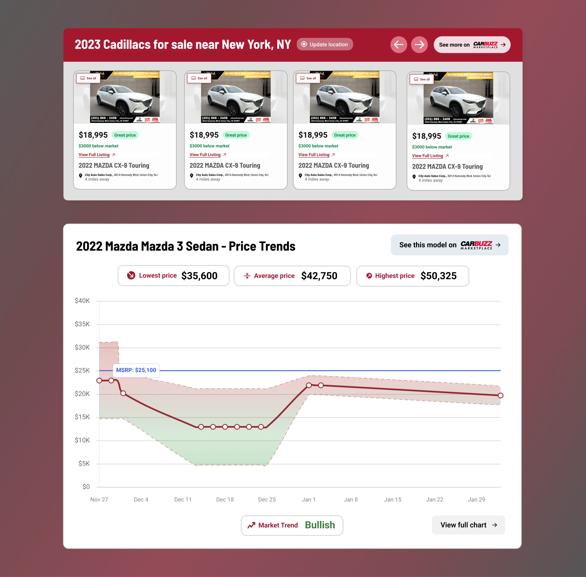
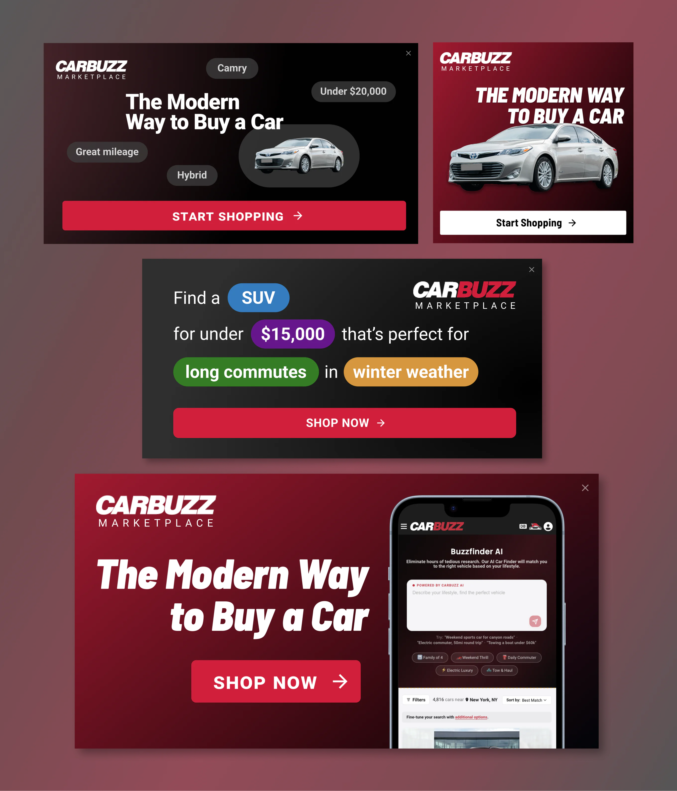

Case Study
Carbuzz Marketplace
View live siteUI Design | Data Visualization | Development | Branding
CarBuzz Marketplace is a car-buying experience built for people who already used CarBuzz to research cars. The site had model overviews, expert ratings, and price trends, but nothing that carried that trust into an actual purchase path. This project closed that gap with discovery, listings, and evaluation in one place, creatingease and clarity so users can shop and decide with confidence. In its first year, the marketplace is on track for about $1.09M in gross revenue for CarBuzz.

Challenge
CarBuzz already had research pages for people who were looking into buying a car, but no actual commerce path. The marketplace closed this gap, allowing people to discover, evaluate, and buy with confidence, while keeping the brand's editorial judgment visible from article to listing to vehicle page.
Approach
The product is built around a few main surfaces. The landing homepage provides search, categories, and AI discovery, spotlighting particular models and listings valued by CarBuzz editors. The results allow both AI prompting and filtering, plus feature CarBuzz specific specs like Buzzscore and price trends on results, making it easy to find the perfect match. Article inserts such as listing carousels, promotional vignettes, and price trends charts directing readers elsewhere on the site into the marketplace.
Screens
Homepage
Opens with search, categories, and featured listings so people can browse in more than one way. Includes the BuzzFinder AI search where users can describe a lifestyle or use keywords to find the right car.


Results page
Supports AI prompts and standard filters, and results show price context and deal signals that are built into CarBuzz to help users easily compare value between cars.

Article inserts
Listing carousels and price trend modules sit inside articles and database pages so that site users can be directed to the marketplace naturally.

Campaigns
Designed and developed multiple ad placements to direct users to the marketplace.

Outcome
The marketplace puts a layer of commerce on top of the knowledge base and research tools CarBuzz already had. Articles and database pages easily lead to listings, driving more traffic and growing placement and partnerships with sponsors and vehicle providers for the site. In its first year, the marketplace is on track for about $1.09M in gross revenue.